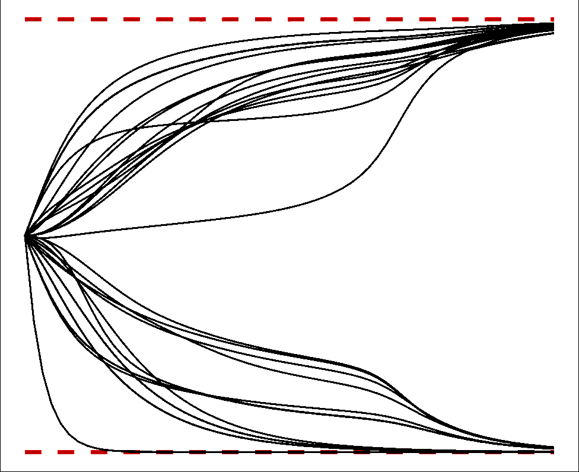
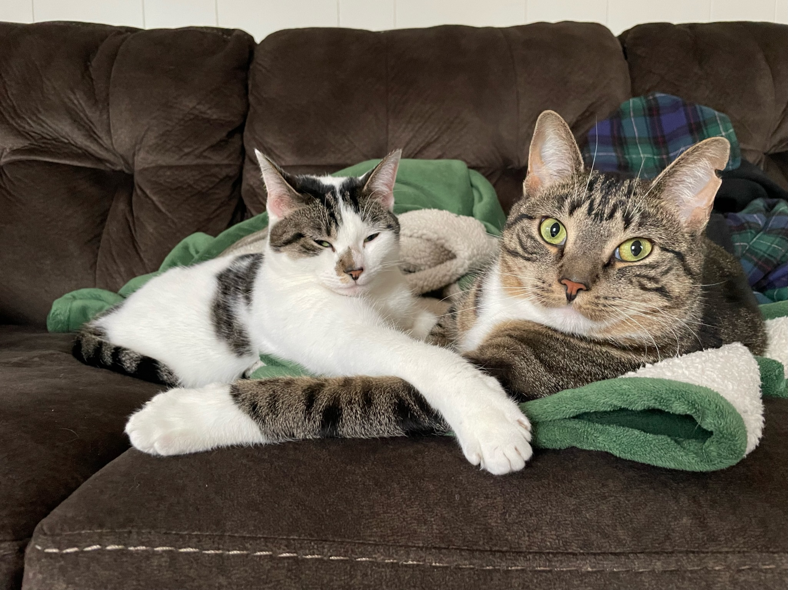
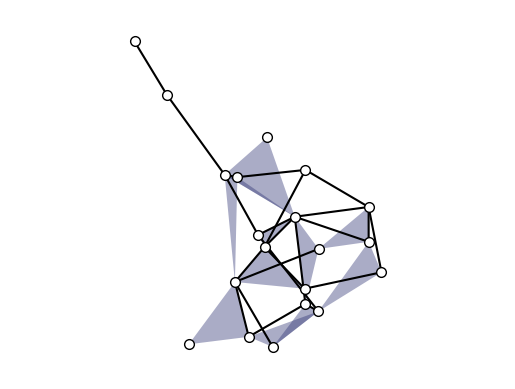
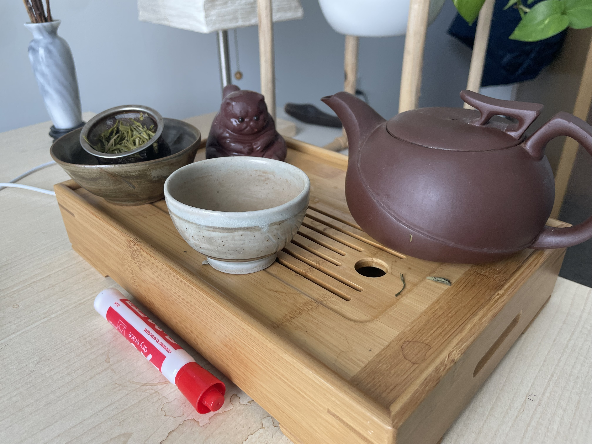
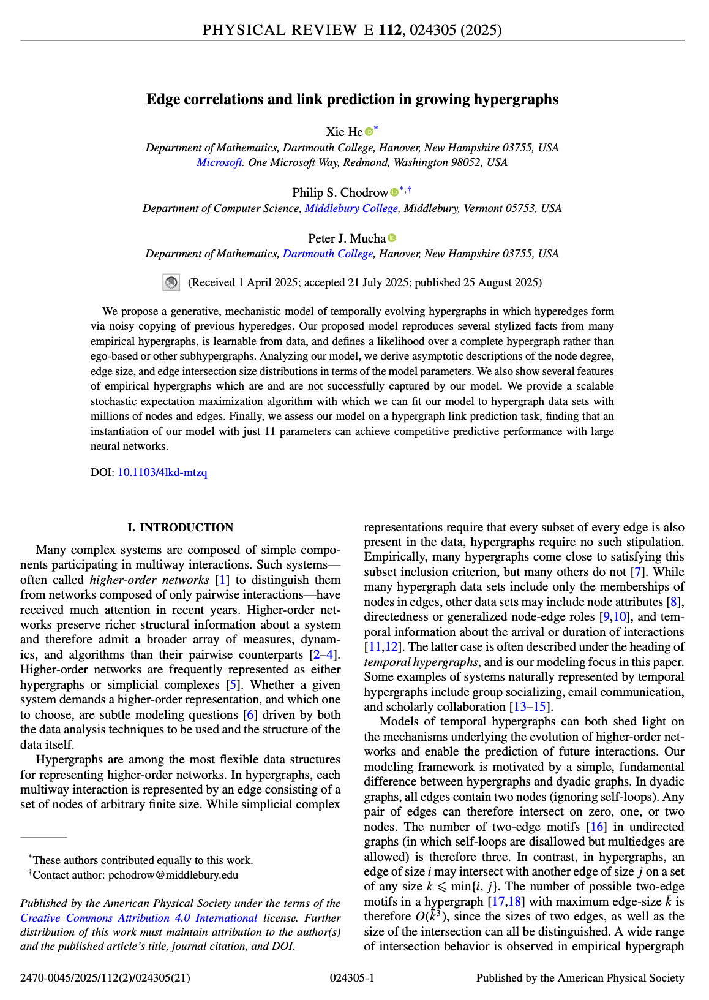

Growing Hypergraphs with
Edge Copying
TopoNets@NetSci
June 2nd, 2026
Hi everyone! I’m Phil Chodrow
Prof. of CS at Middlebury College, a small liberal arts college in Vermont.
Students/postdocs: ask me about #LiberalArtsLife if you’re curious.
I like aikido, tea, my cats, being outside, math models of social systems, and hypergraphs.






|
Xie He |
|

|
Phil Chodrow |
|
Peter Mucha |

|
Xie He |
|
|
|
Phil Chodrow |
|
Peter Mucha |
He
Chodrow
Mucha
|
Xie He |
|
|
|
Phil Chodrow |
|
Peter Mucha |
Hyperedge
Copy
Model
Thank you!!
Hypergraphs have interesting two-edge motifs (intersections). Learnable, mechanistic models of hypergraph growth can be tractable and predictive.
Edge correlations and link prediction in growing hypergraphs. He, Chodrow, and Mucha. Physical Review E (2025)
Xie He
Peter Mucha

Hompohily in Hypergraph Growth??
Violet Ross (CU Boulder)
Modeling Homophilic Hypergraph Growth Using Edge Copying (#201)
Wednesday @4:45pm in Central Square